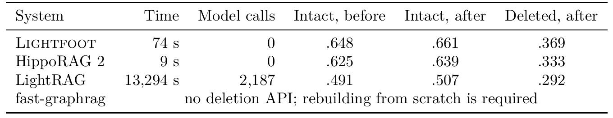
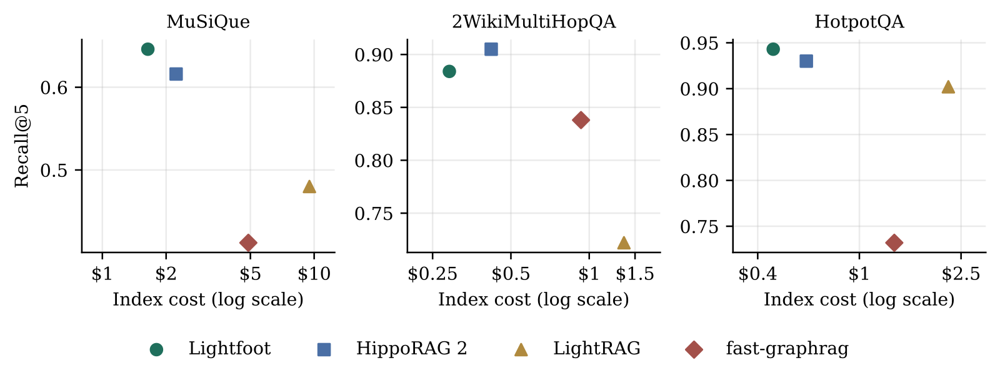
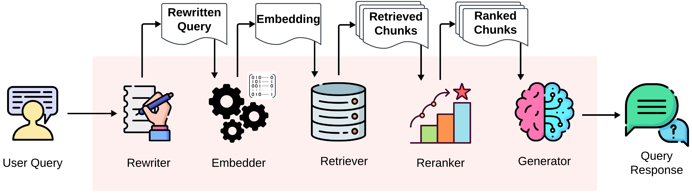
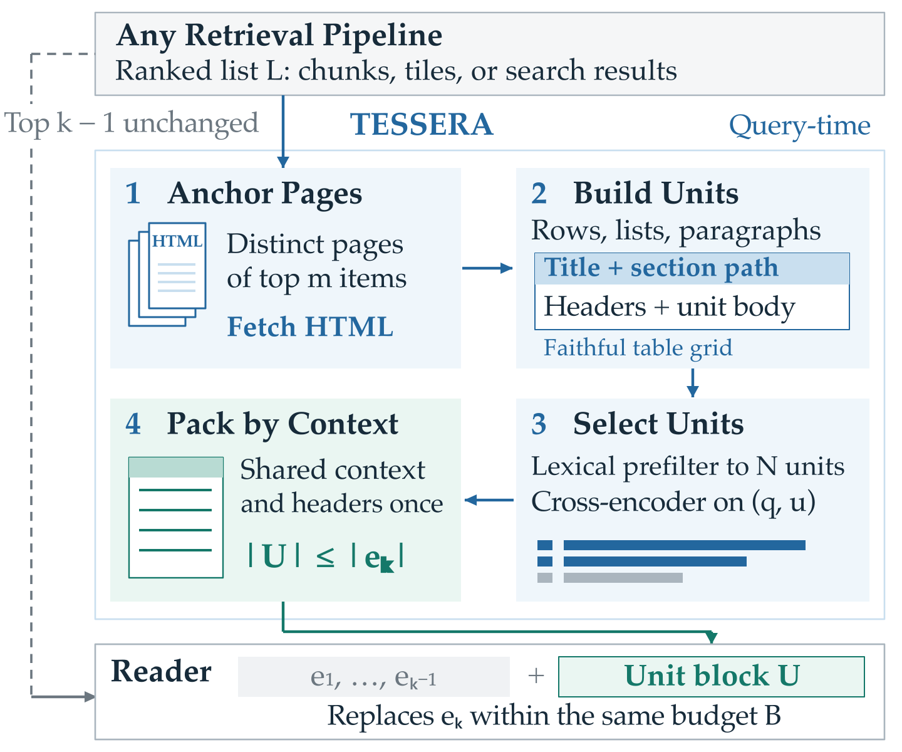
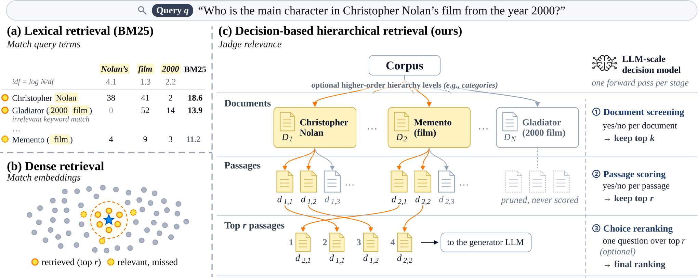
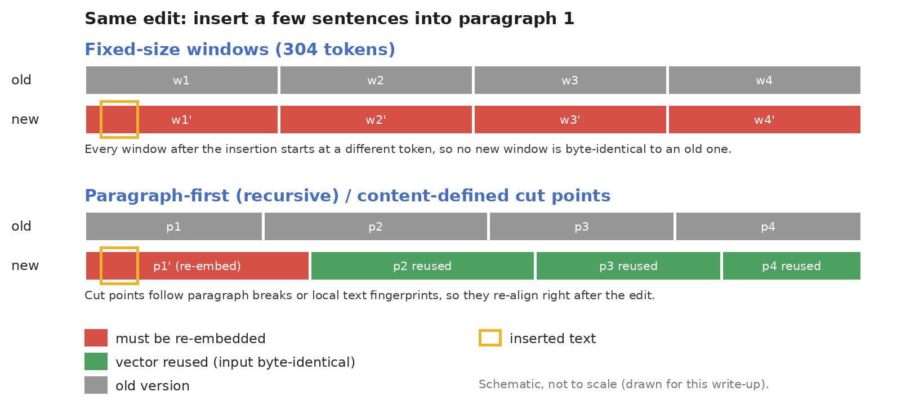

目录 · 8 节
1建图、提问、删除时系统各做什么2每段话抽出一行 JSON3实体由名字卡片按规则算出，删除时重算4为了这个性质去掉的两项设计5删完真的和从没收录过一样吗？6检索不调模型，靠图游走到问题没提到的实体7建图成本最低，准确率和最强基线互有胜负8它输在哪些问题上？GraphRAG 系统 Lightfoot 把「从知识图谱里删干净一篇文档」的功夫挪到了建图那一步：建图时每段话的抽取结果单独存放，图里的实体、事实和连线都只按还在的段落算出来，所以删文档时只要删掉这些段落的记录、重算受影响的部分，不用再调大模型。
GraphRAG 这类系统做的是多跳问答。答案的证据散在好几段话里，问题却往往只点了第一段里出现的名字，后面几段和问题字面上不像，单靠相似度检索找不到。所以系统先用大模型从每段话抽出实体（公司、人名这类名字）和它们之间的关系，把实体连成一张知识图谱，提问时从问题点到的实体出发，沿着图上的关系一步步走到后面几段。
设想一个公司知识库（示意，全文沿用这个例子），库里有四段话：
- P1（新闻）：「星河物流的 CEO 是林舟。」
- P2（一份合同）：「星河物流公司 2019 年收购了蓝鲸仓储。」
- P3（企业简介）：「蓝鲸仓储的总部在宁波。」
- P4（行业报告）：「星河集团物流今年扩建了华东线路。」这里的「星河集团物流」和前两段的「星河物流」是不是同一家，名字上看不出来。
用户问：「林舟管理的公司收购的那家仓储企业，总部在哪？」问题里只有林舟一个名字。系统要先从 P1 知道林舟管理的是星河物流，再从 P2 知道星河物流收购的是蓝鲸仓储，最后从 P3 拿到「宁波」。
麻烦出在后面：这份合同到期了，法务要求把 P2 和系统从 P2 抽出来的一切都删掉，删完的系统要像从没读过 P2 一样。留存政策、合同到期和被遗忘权都会提这种要求。系统删掉 P2 这段原文很容易，难的是 P2 的内容已经被抽成图里的实体、事实和连线，还可能和别的文档的内容一起写进了同一段由模型生成的文字。
现有系统的麻烦就出在这种混写的文字上。LightRAG 让模型给实体写描述，同一实体有多份描述时再调模型合并，于是「星河物流」的描述里可能同时写着 P1 的 CEO、P2 的收购和 P4 的扩建。要删 P2，这段描述就得让模型去掉收购那部分后重写一遍。Microsoft GraphRAG 更难办，它把关系紧密的一群实体划成一个社区，让模型给每个社区写一份摘要报告，报告里的一句话来自哪篇文档根本追溯不回去。作者翻了 17 个开源 GraphRAG 框架的源码，5 个支持按文档删除，没有一个声称删完得到的图，等于从一开始就没收录这篇文档时建出来的图。
Lightfoot 的改法是不让不同段落的内容混写：每段话的抽取结果各存各的，实体、别名（同一实体的不同叫法）和同义边（连接名字相近的实体）都从还在的段落按规则算出来。删 P2 时，系统只需删掉 P2 的抽取记录，再用同样的规则重算和 P2 有关的实体和连线。在 MuSiQue 这个多跳问答数据集（共 11,402 篇文档）上删掉同样的 1,140 篇，LightRAG 用了 2,187 次模型调用和 3.7 小时，Lightfoot 用了 74 秒和 0 次调用。LightRAG 的时间花在让模型重写每个受影响实体的描述上。Lightfoot 删完的图，还和只用剩下 10,262 篇新建的图逐表一致。
建图、提问、删除时系统各做什么
Lightfoot 只在两个地方调大模型：建图时每段话抽取一次，答题时生成一次答案。其他步骤都是本地计算。
| 时刻 | 输入 | 系统做什么 | 产出 | 调大模型 |
|---|---|---|---|---|
| 建图 | 一段话 | 抽出实体和事实，把结果缓存下来 | 这段话自己的抽取结果 | 每段 1 次 |
| 建图 | 所有抽取结果 | 算名字的 embedding，用两个相似度阈值连边 | 实体、别名、同义边、事实来源 | 0 次 |
| 提问 | 一个问题 | 用事实和段落选起点，在图上游走，再用 cross-encoder 重排 | 排好序的段落 | 检索 0 次，答题 1 次 |
| 删除 | 要删的文档 | 删掉它的记录，重算受影响的实体和同义边 | 删后的图 | 0 次 |
建图那两行的分工决定了删除为什么不用调模型：大模型每次只读单独一段话，把不同段落里的同一实体并到一起这件事，全部交给可以随时重算的相似度规则。
每段话抽出一行 JSON
每段话只调一次 Llama 3.3 70B，返回压缩成一行的 JSON。里面最多 12 个实体，每个实体有名字、类型和不超过 8 个词的描述。还有最多 12 条事实，每条写成主语、谓语、宾语，再加一句不超过 12 个词的原文证据。P2 抽出来大致是这样（示意，字段名和内容都是编的）：
{"entities":[["星河物流公司","公司","收购蓝鲸仓储的物流公司"],["蓝鲸仓储","公司","被收购的仓储企业"]],"facts":[["星河物流公司","收购","蓝鲸仓储","2019 年收购了蓝鲸仓储"]]}事实写成数组而不是带字段名的对象，输出不换行，是为了少输出 token（模型按 token 计费和计时）。在 32 段样本上，每段输出从 436 个 token 降到 269 个，每段抽出的事实却从 3.8 条升到 7.7 条。这说明同样一次调用，紧凑的输出格式省下的 token 能用来多写事实。
抽取结果按段落缓存，缓存的 key 里带着提示词和输出格式的哈希，提示词或格式一改，旧缓存就不会被误用。后面从缓存重建一张图时，一次模型都不用调。
实体由名字卡片按规则算出，删除时重算
假如系统维护一张实体表，P2 进来时把「星河物流」和「星河物流公司」合并成了一条。等 P2 删掉，表里只剩合并后的那一条，系统看不出这次合并是不是靠 P2 才成立的。Lightfoot 因此把原始的出现记录当作唯一依据：实体表仍然存着，但表里每个实体都由这些记录按固定规则算出，哪条记录被删，受影响的实体就按同样的规则重算。
名字每在一段话里出现一次，系统就存一张名字卡片（论文叫 form），记下哪一段、规范化后的名字、类型，以及这段话对实体的描述。规则只有两条。同类型的两张卡片，名字 embedding 的余弦相似度到 0.92 就连一条线。连在一起的一组卡片（一个连通分量）就是一个实体。
实体的编号取这组卡片里字典序最小的名字，显示用的规范名取这组卡片里出现段落最多的那个名字。这两样都只看当前还在的卡片。
示意：P1 的「星河物流」记作卡片 a，P2 的「星河物流公司」记作卡片 b，P4 的「星河集团物流」记作卡片 c。假设 a 和 b 的相似度是 0.95，b 和 c 是 0.93，a 和 c 是 0.88。
删 P2 之前，a 连 b，b 连 c，三张卡片是同一个实体，尽管 a 和 c 只有 0.88。删 P2 之后，卡片 b 消失，a 和 c 的 0.88 不到 0.92，这个实体就断成两个。这正是从没收录过 P2 时系统会得到的结果，P2 在实体这一层不留痕迹。
断开之后，这两个实体不会完全失联。Lightfoot 还有第二个阈值：同类型的两个实体，各自的规范名相似度到 0.80 就连一条同义边，一个实体能连多少条同义边不设上限。a 和 c 的 0.88 过了这条线，所以从「星河物流」仍能沿同义边走到「星河集团物流」。
事实的处理方式相同。每条事实记着哪些段落说过它。示意：「星河物流收购蓝鲸仓储」的来源集合如果只有 {P2}，删 P2 后集合变空，事实消失。如果另一篇文档 P5 也写了这次收购，集合从 {P2, P5} 变成 {P5}，事实留下。
只要图里每条内容都只由还在的段落各自的抽取结果决定，删除就变成删记录再按规则重算，不需要再问模型。
论文把这个性质写成一条命题：把文档集随便分成 A、B 两份，从全量图里删掉 B，得到的存储等于只用 A 建的存储。证明的要点就是上面的例子：卡片和事实来源跟着段落一起删，连线只看两张卡片，所以哪些卡片连成一个实体，和文档插入的顺序、分几批插入、之前删过什么都没有关系。名字向量也按固定大小的批次计算，少了这条，同一个名字在删前删后可能因为同批的名字不同而算出不同的向量。 Hoot 说

三张名字卡片和它们的相似度都是示意，沿用正文的例子（a 来自 P1，b 来自 P2，c 来自 P4）。删掉 P2 后，a 和 c 的 0.88 不到 0.92，实体断成两个；0.88 过了同义边的 0.80，两个实体之间连一条同义边。 出处: 论文 §3.2（form 的定义、0.92 连边、连通分量、实体 ID 与规范名规则、0.80 同义边、事实按 form 索引；Proposition 1 的证明：删除 B 的段落贡献的 form 和断言，再重算被触及的分量和同义边）
为了这个性质去掉的两项设计
第一个放弃的是让模型判断两个名字是不是同一实体。相似度在 0.80 到 0.92 之间的名字对最模糊，例子里 a 和 c 的 0.88 正好落在这里，叫模型判一下是很自然的做法。可是模型一旦判成同一实体，这条连线就取决于模型当时看到了什么，比如判定时 P2 的收购描述也在上下文里。P2 删掉之后，这次判定的结果还留在图里，又不能按规则重算，图就回不到没见过 P2 的样子。
去掉它损失不大。作者在 2,000 段的切片上用 141 个问题测试，去掉模型判定前后，Recall@5（标准证据段落落在前 5 名里的比例）变化不到 1 个点，落在噪声范围内，全语料还省下 5,626 次判定调用。这说明至少在这个切片上，精确删除没有用检索效果来换。
第二个放弃的是 top-k 同义列表。示意：取 k=2，实体 X 的近邻是 Y（0.90）、Z（0.85）、W（0.82），列表只留 Y 和 Z，W 被挤掉了。删掉 Y 所在的文档后，从没见过 Y 的图里 X 的列表应该是 Z 和 W，存储里却只剩 Z。
换成固定阈值 0.80，X 和 Y、Z、W 各有一条边，删 Y 只少 X–Y 这一条，另外两条不受影响。
这种只看当前卡片、不看历史的设计，来自一次实测的失败。早期版本让每个新名字去匹配图里当时已有的规范实体，也保留了 top-k 同义列表，删完后和新建索引差了 12 个实体和 340 条同义边。套到例子上，卡片 c 进来时如果因为和 b 相似而并进了以 b 为规范名的实体，这次合并就被记死了；删掉 P2 后 c 仍会留在 a 所在的实体里，而从没见过 P2 的图里 a 和 c 是两个实体。12 个实体相对 MuSiQue 上 68,455 个实体的规模很小，可是「等于重建的图」要求逐条相等，差 1 条就不成立。
删完真的和从没收录过一样吗？
作者做了两层检查。第一层对所有支持删除的系统：在 MuSiQue 上调用各系统自己的删除接口，随机删掉 10% 的文档，再把全部问题重跑一遍。问题分两类：证据段落都没被删的（证据幸存），和至少一段证据被删的（证据被删）。

在证据幸存的问题上，Lightfoot 的 Recall@5 删前是 .648，删后是 .661。同一次删除后，证据被删的问题只有 .369。证据被删的问题分数明显更低，说明删除确实把内容从检索结果里拿掉了；证据幸存的问题分数没有下降，说明留下来的内容没受损伤。LightRAG 的 Recall@5 分别是 .491、.507 和 .292，趋势相同，只是要付 2,187 次模型调用。
fast-graphrag（每段做一次结构化抽取、用 PageRank 排序的框架）没有删除接口，要删只能全部重建。HippoRAG 2（同样用 PageRank，建图时每段抽取两次）也是 0 次调用，只用了 9 秒，比 Lightfoot 的 74 秒还快。所以 Lightfoot 的优势不在删得最快，在于它的删后结果被逐表验证过。
第二层只对 Lightfoot。作者给删后的存储算一个指纹（可以理解成整份存储的校验值），再开一个独立进程，从抽取缓存重建剩下 10,262 篇文档的索引，比较两边。指纹完全相同，六张表逐表一致：68,455 个实体、71,195 个别名、106,472 次提及、92,608 条事实、94,032 条事实来源、63,514 条同义边。这说明这一节标题里的问题在这次实验里有了肯定的答案：在全量 MuSiQue 上删 10% 之后，图和从没收录这些文档的图一样。
这层验证只做在 Lightfoot 上。HippoRAG 2 也按出处删除，作者说它同样可能是精确的，所以这组数字不能读成 HippoRAG 2 删不干净。
检索不调模型，靠图游走到问题没提到的实体
删除干净只解决了运维的问题，系统还得答得对。Lightfoot 的图里有实体和段落两种节点。段落和实体之间的边来自名字卡片，实体之间的边按连接它们的事实条数加权，同义边按名字相似度加权。
检索的起点是问题最像的两条事实。系统用 bge-base 把问题和每条事实都变成 embedding，找出和问题最相似的两条事实，把它们的主语和宾语实体当作 Personalized PageRank 的种子。每个种子的初始权重是事实相似度除以提到这个实体的段落数。
示意：问题和「林舟是星河物流的 CEO」的相似度是 0.9。林舟只出现在 1 段里，初始权重是 0.9。星河物流出现在 3 段里，初始权重是 0.3。这个除法让到处被提到的实体分不走太多起点权重。
除了实体，和问题最相似的 100 个段落也作为种子，但权重很小：这些段落的相似度做完 min–max 归一化后，每个段落种子分到的权重最多是 0.05。游走的阻尼取 0.9，也就是每一步有九成概率沿边继续走。权重从林舟流向星河物流，再沿「收购」这条事实边流向蓝鲸仓储，最后流到 P3。P3 因此拿到分数，尽管问题里根本没提蓝鲸仓储。
删掉 P2 之后，「收购」这条事实边也不在了，权重沿这条路走不到蓝鲸仓储。这条路断掉正是删除该有的效果。
游走取分数最高的 30 段，交给本地 cross-encoder 打分。Lightfoot 没有让 cross-encoder 的名次直接替换 PageRank 的名次，而是用 RRF（把两个名次的倒数相加，k=60）融合。
示意：P3 在 PageRank 里排第 2，在 cross-encoder 里排第 20，融合分是 1/(60+2) + 1/(60+20) = 1/62 + 1/80 ≈ 0.0286。一段只是字面像问题的干扰段落，PageRank 排第 25，cross-encoder 排第 1，融合分是 1/85 + 1/61 ≈ 0.0282。只看 cross-encoder，P3 会掉出前五；融合之后 P3 排在干扰段落前面。
消融实验里，融合比直接替换 PageRank 名次多出 3.4 个点的 Recall@5，是所有单项里收益最大的。这说明把 PageRank 名次留在最终排序里，比只信 cross-encoder 更好。我的理解是，后面几跳的段落和问题本身字面上不像，cross-encoder 单独打分时容易吃亏，上面的示意就是这种情况。
建图成本最低，准确率和最强基线互有胜负
比较的条件是统一的：四个系统用同一个抽取模型、同一个答题模型、同一个 embedding 和同一句答题指令。Lightfoot 的检索参数只在 MuSiQue 前 500 题上调过，和 HippoRAG 2 比 MuSiQue 检索时用后 500 题。另外两个多跳问答数据集 2WikiMultiHopQA 和 HotpotQA 各 300 题，没有参与调参。
| 系统 | MuSiQue 建图成本 | 每段调模型次数 | 每题检索时调模型次数 | MuSiQue 检索中位延迟 |
|---|---|---|---|---|
| Lightfoot | $1.64 | 1.0 | 0 | 0.53 s |
| HippoRAG 2 | $2.23 | 2.0 | 1 | 1.56 s |
| fast-graphrag | $4.89 | 1.1 | 1 | 1.96 s |
| LightRAG | ≈$9.5 | 2.5 | 1 | 0.81 s |
成本按统一的模型标价折算，LightRAG 的 MuSiQue 数字是由调用次数估算的。三个数据集上 Lightfoot 的建图成本都最低，比 HippoRAG 2 低 26–31%，比 LightRAG 和 fast-graphrag 低 3 到 6 倍。这说明为精确删除做的约束没有抬高建图成本，每段只抽取一次反而把账单压了下来。

和最强基线 HippoRAG 2 配对比较时，作者一共比了 15 项，Lightfoot 显著更好 5 项，显著更差 2 项，其余 8 项打平。
下表只列显著的 7 项，单位是百分点，方括号是 95% 区间。EM 是答案完全匹配的比例，F1 按答案 token 算。
| 数据集 | 指标 | Lightfoot 减 HippoRAG 2 |
|---|---|---|
| MuSiQue | Recall@5 | +2.8 [+0.5, +5.1] |
| MuSiQue | Recall@10 | +4.3 [+2.5, +6.2] |
| HotpotQA | Recall@10 | +1.3 [+0.2, +2.7] |
| HotpotQA | EM | +7.7 [+3.0, +12.3] |
| HotpotQA | F1 | +5.0 [+1.3, +8.7] |
| 2WikiMultiHopQA | Recall@2 | −3.9 [−7.0, −0.8] |
| 2WikiMultiHopQA | F1 | −8.4 [−12.9, −4.2] |
这说明单看准确率，Lightfoot 和 HippoRAG 2 互有胜负。Lightfoot 的明确优势在建图更便宜、检索不调模型，以及删后结果被逐表验证过。
和另外两类做法比，它的检索更稳。在 MuSiQue 上，它的 Recall@5 是 .646，比纯向量检索的 .544 高 10.2 个点。三个数据集上，它的 Recall@5 都高于 LightRAG 和 fast-graphrag。
读答案指标要留一点余量。作者做过两次运行，只把交给答题模型的上下文从 8 段改成 10 段，300 题里就有约 30 题在对错之间翻转，净变化却接近零。作者因此把 300 题上低于约 4 个点的答案差异看作打平。HippoRAG 2 的绝对分也低于它原论文的结果，因为这里统一用了同一个 embedding，没用它论文里的 7B embedder。
它输在哪些问题上？
MuSiQue 上的失败也出在前面那条沿图游走的路径上。在一次除了图游走、还额外加了 BM25（关键词检索）和向量检索两路候选的运行里，300 题答错了 183 题，其中 109 题的上下文至少缺一段标准证据。缺的集中在后面几跳：第一跳段落的实体有 83% 在问题里被点名，第二跳降到 36%，第三、四跳只有 28%。这说明对问题文本做检索够不到这些段落，只有沿着链条走才行。
沿链条走的起点也会选错。Lightfoot 只取和问题最像的两条事实当种子，有时选中的是和问题沾边、却不在推理链上的事实，比如某部作品的发行日期。放回例子，如果选中的是「星河物流成立于 2008 年」（示意），权重就不一定流向「收购」这条边。
HippoRAG 2 在检索时用一次模型调用过滤候选事实，正好针对这个问题。作者认为这可能解释了它在 2WikiMultiHopQA 上的优势，那个数据集的问题大多是比较两个被点名的实体。如果这个解释成立，这就是 Lightfoot 省掉检索阶段模型调用要付的价钱。
这里的题目都是多跳问答，Lightfoot 也没有社区报告，所以上面的比较说的只是多跳问答，不涉及「这批文档整体在讲什么」这类语料级摘要问题。
回到那份合同，法务要的是 P2 从图里彻底消失。Lightfoot 的回答是建图时就不让 P2 和别的段落混写，实体、同义边和事实都能从还在的段落重新算出来。它为此放弃了模型判同名和 top-k 同义列表，在 MuSiQue 上验证了删后与重建逐表一致，检索效果和最强基线互有胜负。
读完这篇，你觉得
夜读鸮记下了，谢谢你的反馈。
点一下即可，无需登录；再点一次撤回。只统计匿名次数，不记录你是谁。
相关论文RELATED

Retrieval · 2026-11-05From Logs to Faults: Reference-Free Fault Localization for Retrieval-Augmented Generation PipelinesRAGLog 只读 RAG 流水线每次运行留下的调用日志，不需要标准答案，也不用改代码，就能指出这次运行是哪个环节出了错。这件事有用，是因为中间出了错，最终答案却可能是对的。在五条开源流水线的自然运行里，37% 至少有一个环节出错，其中超过三分之一照样答对了，只看答案发现不了。它逐个环节检查：改写后的查询有没有丢掉原问题里的人名、数字和日期，检索回来的段落里有没有一段真正含有答案，重排有没有把含答案的那段挤出去，答案在给定材料里有没有依据。每个环节再由各自训练好的分类器判断是否出错。在自然发生的故障上，它定位出错环节的 F1 是 0.73，Claude Code 是 0.58。排查 RAG 故障时，日志本身就够做第一轮筛查。 Retrieval · 2026-11-02Retrieving from Your Own Mistakes: On-Policy Training of Embedding Models for Multi-Hop Retrieval-Augmented Generation多跳检索里的链式 embedding 检索器，训练和上线时看到的历史不一致，这篇论文给出一个不加大模型调用的修法。这类检索器每一步把问题和已找到的段落拼在一起再找下一段，训练时历史全是正确段落，上线后却常混进它自己找错的段落。在四跳的 MuSiQue 问题上，到第三步已有 70% 的检索状态带了错段。作者每轮训练都让当前模型自己跑一遍，拿它真实走到的状态来训练，目标设为还没找到的最早那段正确段落。同样配方下，前五段里把证据找全的问题比例从 44.6% 提到 50.5%。
Retrieval · 2026-11-02Retrieving from Your Own Mistakes: On-Policy Training of Embedding Models for Multi-Hop Retrieval-Augmented Generation多跳检索里的链式 embedding 检索器，训练和上线时看到的历史不一致，这篇论文给出一个不加大模型调用的修法。这类检索器每一步把问题和已找到的段落拼在一起再找下一段，训练时历史全是正确段落，上线后却常混进它自己找错的段落。在四跳的 MuSiQue 问题上，到第三步已有 70% 的检索状态带了错段。作者每轮训练都让当前模型自己跑一遍，拿它真实走到的状态来训练，目标设为还没找到的最早那段正确段落。同样配方下，前五段里把证据找全的问题比例从 44.6% 提到 50.5%。
Retrieval · 2026-10-29Tessera: Structure-Completed Evidence Units for Web Retrieval-Augmented Generation问维基百科《欢乐糖果屋》的制片人是谁，答案就在页面信息框的制片一行，可文本抽取把这一格里的两个名字弄丢了，读者模型只看到导演，于是答错。这篇论文在整个英文维基百科上把答案证据从网页源码一路追到读者输入，发现这种丢失很普遍：7.6% 的问题证据根本没完整进索引，其中 81% 是表格单元格、表头或图注。Tessera 检索照旧，只在读之前把排名靠前的网页重新拆成一行表格、一个列表项这样的小单元，补上标题、章节和表头，再挑相关的装进同样的 token 预算。文本和截图两类流水线的答对率都提高 5 到 6 个点。 Retrieval · 2026-03-11Approximate Nearest Neighbor Search for Modern AI: A Projection-Augmented Graph Approach在图索引里加一层随机投影：PAG 先用投影估计邻居能否进入候选集，估计能进的才算精确距离，建图时用同一套统计量补入边。6 个新 embedding 数据集上单线程 QPS 最多是 HNSW 的 5 倍，建索引时间只有 HNSW 的 20% 到 40%，还支持在线插入；但它把向量存成 16 位浮点，对比里混进了这一项。
Retrieval · 2026-03-11Approximate Nearest Neighbor Search for Modern AI: A Projection-Augmented Graph Approach在图索引里加一层随机投影：PAG 先用投影估计邻居能否进入候选集，估计能进的才算精确距离，建图时用同一套统计量补入边。6 个新 embedding 数据集上单线程 QPS 最多是 HNSW 的 5 倍，建索引时间只有 HNSW 的 20% 到 40%，还支持在线插入；但它把向量存成 16 位浮点，对比里混进了这一项。
Retrieval · 2026-10-28Retriever-Free Retrieval: Navigating Documents with Decision Models多数 RAG 的召回仍靠 BM25 或向量相似度，召回漏掉的证据，生成模型再强也找不回来。DecisionRAG 不用召回模型，而是让一个决策模型像人逛图书馆一样，从主题到页面再到段落逐层往下找，每层的候选放进同一个上下文一起判。在 268 万个维基百科段落上，它的 Hit@1 比 Qwen3-Embedding-8B 召回加 reranker 高 17.4 个点，每个 query 检索约 1.7 秒。 Retrieval · 2026-11-05QueryFlow: Multi-Hop Graph Retrieval with Adaptive Query Evolution这篇论文做了一个边找边改问题的多跳图检索器 QueryFlow：图上每传播一层，它就把已找到的上下文压成一个摘要向量，并入问题状态，再用新的问题状态引导下一层怎么找。之前的图检索器，比如 GFM-RAG，整个传播过程一直用最初的问题当条件。可多跳问答里，有些证据单看原问题并不相关，要先找到中间的事实才显得有用。在四个多跳问答数据集上，和 GFM-RAG 比，前 10 条结果凑齐全部所需证据的比例平均提高 8.40 个百分点，大模型答对的比例提高 11.6 个百分点。问题状态随已知信息更新，比固定问题更容易把证据找全。
Retrieval · 2026-11-05QueryFlow: Multi-Hop Graph Retrieval with Adaptive Query Evolution这篇论文做了一个边找边改问题的多跳图检索器 QueryFlow：图上每传播一层，它就把已找到的上下文压成一个摘要向量，并入问题状态，再用新的问题状态引导下一层怎么找。之前的图检索器，比如 GFM-RAG，整个传播过程一直用最初的问题当条件。可多跳问答里，有些证据单看原问题并不相关，要先找到中间的事实才显得有用。在四个多跳问答数据集上，和 GFM-RAG 比，前 10 条结果凑齐全部所需证据的比例平均提高 8.40 个百分点，大模型答对的比例提高 11.6 个百分点。问题状态随已知信息更新，比固定问题更容易把证据找全。
Retrieval · 2026-10-24Chunk Recomputation under Real Document Revisions: Measuring Update Cost and Retrieval Quality of Fixed, Recursive, and Content-Defined ChunkingRAG 的分块方案几乎都只在一份静态语料上比较，可知识库里的文档一直在改。每个块单独编码成向量，一次编辑如果让块边界移动，边界两侧的块就成了新的编码输入，哪怕里面的字一个没改。作者取相邻版本的中英文维基百科条目，只有块的完整编码输入和旧版本逐字节相同才复用旧向量。比较的是固定长度切块、段落优先的递归切块和内容定义切块，最后一种在几个词宽的滑动窗口上算哈希，哈希值满足预设条件的位置就是切点。固定长度切块要重算新版本 57–68% 的编码输入，而三者的证据召回率在同一种语言内相差不到 2 个百分点。固定长度切块在插入点之后整体平移，后面的窗口都对不上旧版本，所以重算最多。
讨论
欢迎补充实验细节、复现经验或不同看法。需 GitHub 登录。
正在加载讨论…